Помимо программирования, я увлекаюсь спортом, туризмом и Lego
Technic.
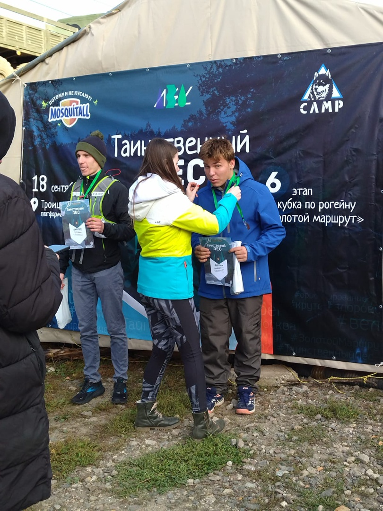
Я люблю спорт за радость от движения, адреналин соревнований,
многобразие видов. Я занимаюсь греблей, бегом, лыжами, спортивным
ориентированием.
У меня есть плотное расписание спортивных
приключений: водные гонки, рогейны, ночные туристические марафоны.
Мне нравится не только применять силу и выносливость, но и
нагружать мозг тактическим планированием и ориентированием по карте
на местности, при помощи только одного компаса, без гаджетов.
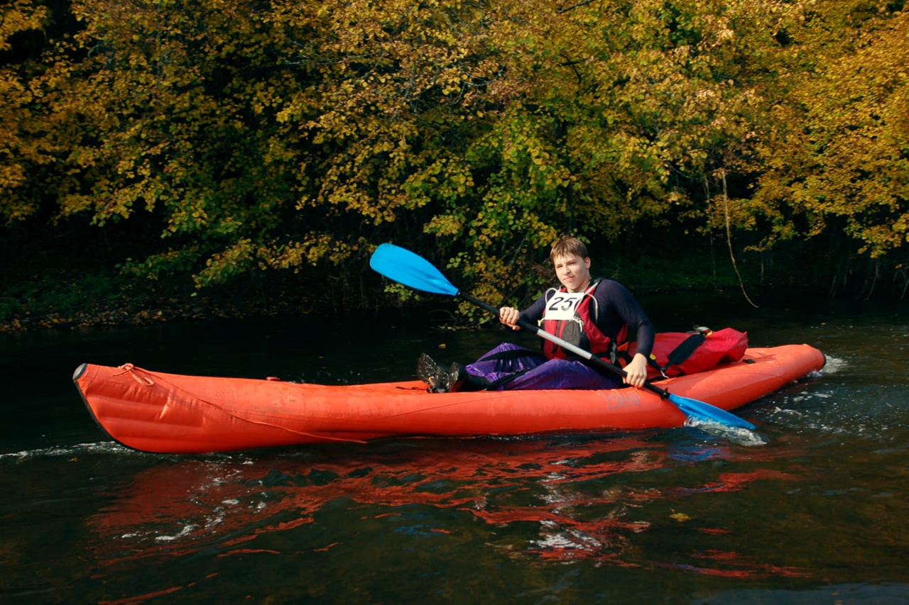
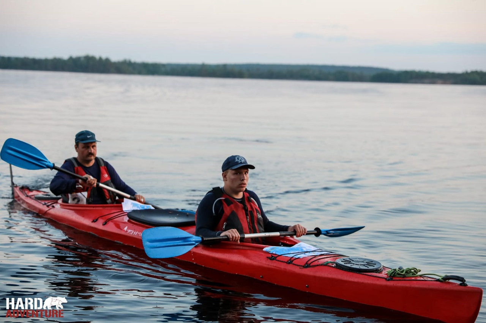
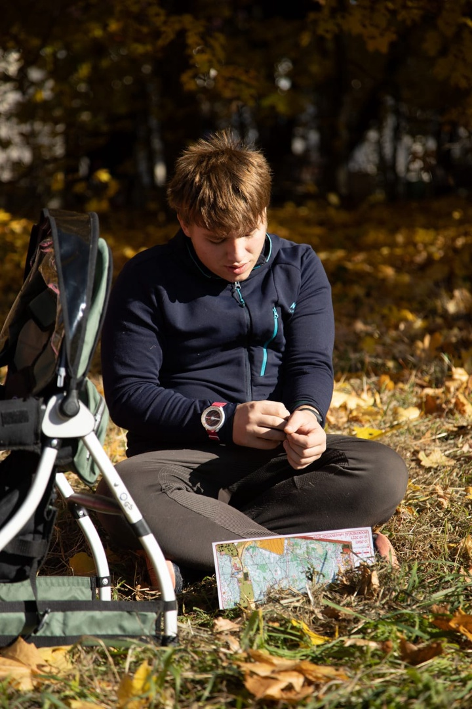
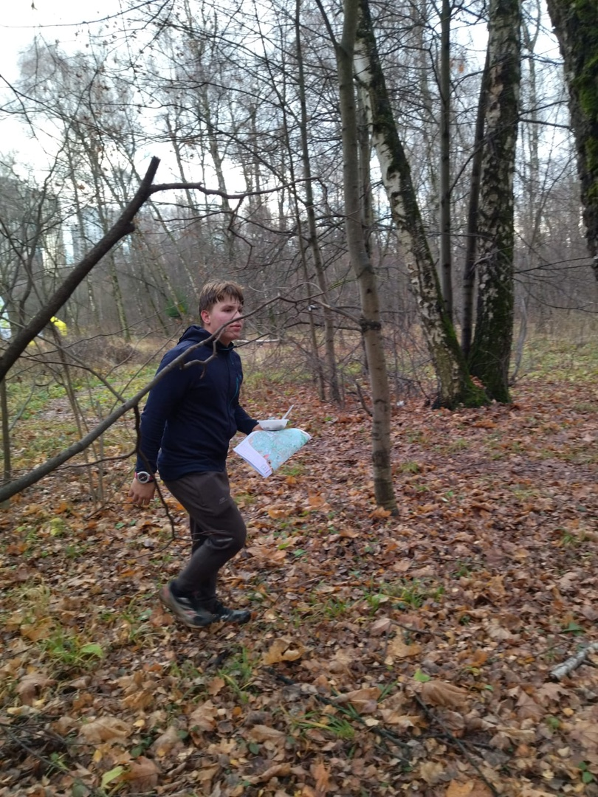
Вот немного фотографий за прошедший сезон.
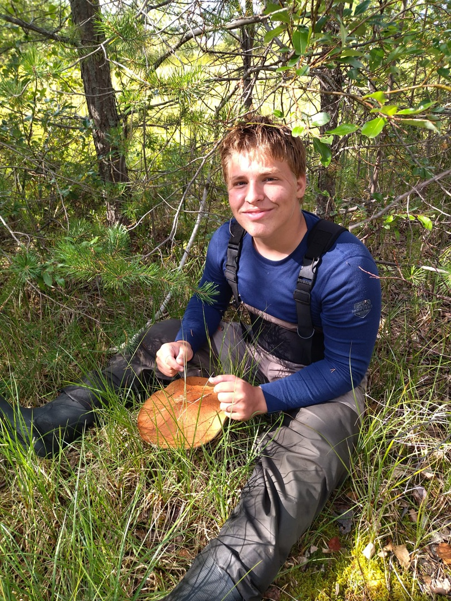
Обожаю ходить в походы. Выходного дня - километров на 20-30 по
осеннему или зимнему лесу, на каникулах - в горы, на сплав по
речкам, летом - обязательно в Карелию. На две недели погрузиться в
общение с природой и моей семьёй, остаться наедине с собой без
интернета и гаджетов, обходиться минимумом вещей, наслаждаться
красотами и дарами природы.
Дейcтвительно, где если не в Карелии можно
увидеть такой гриб.
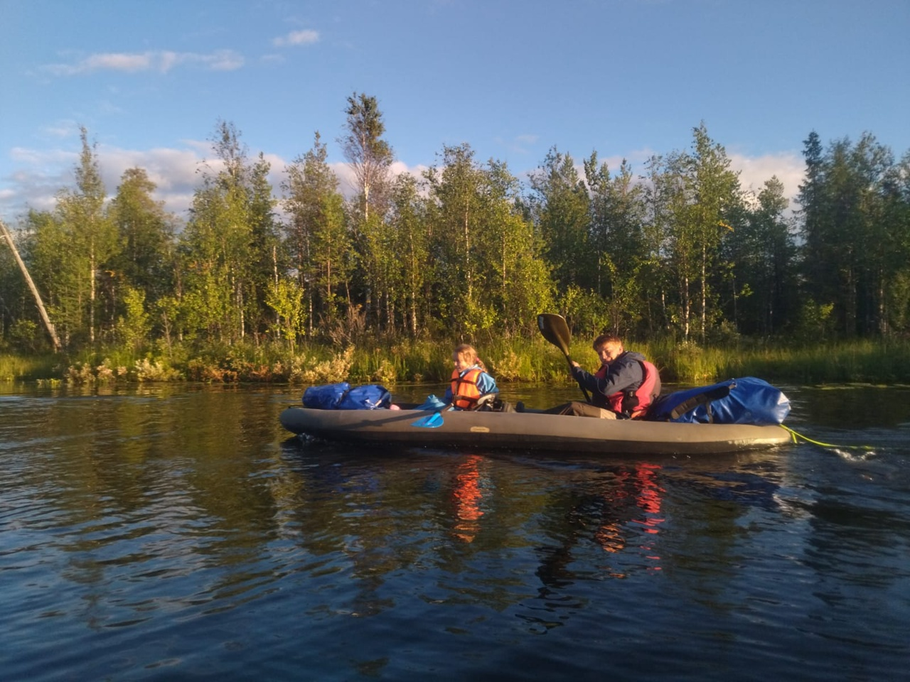
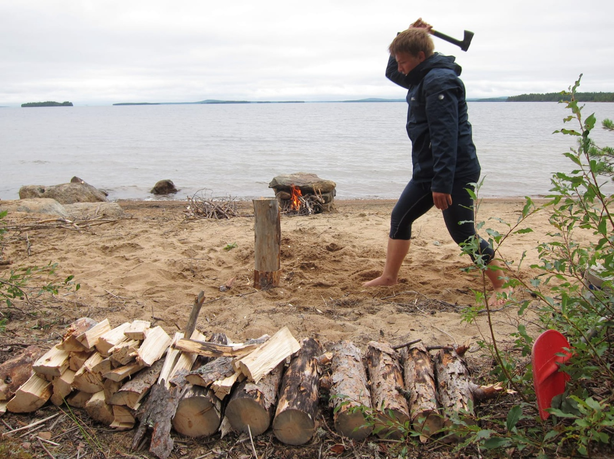
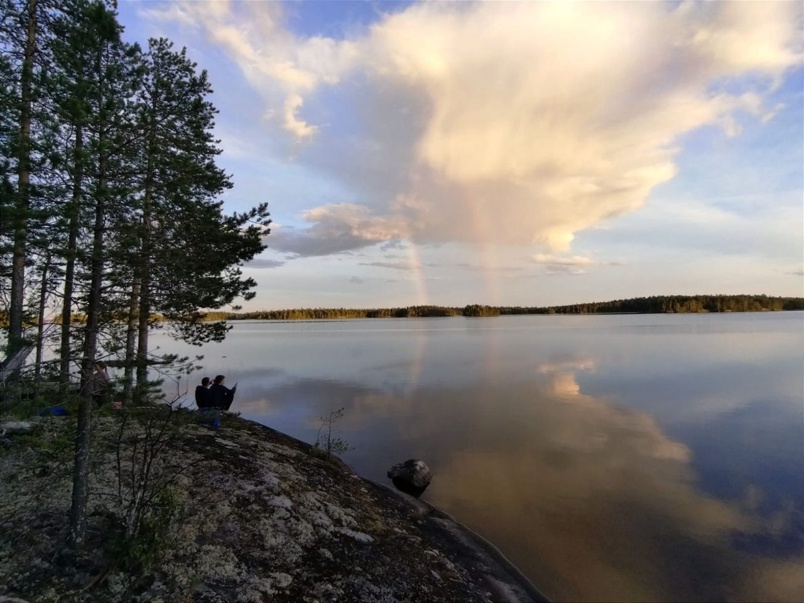
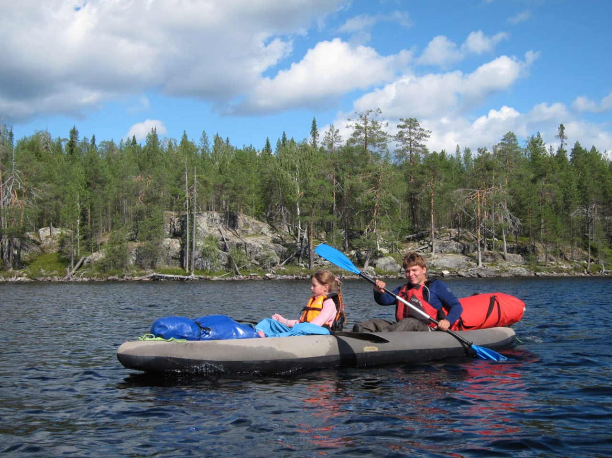
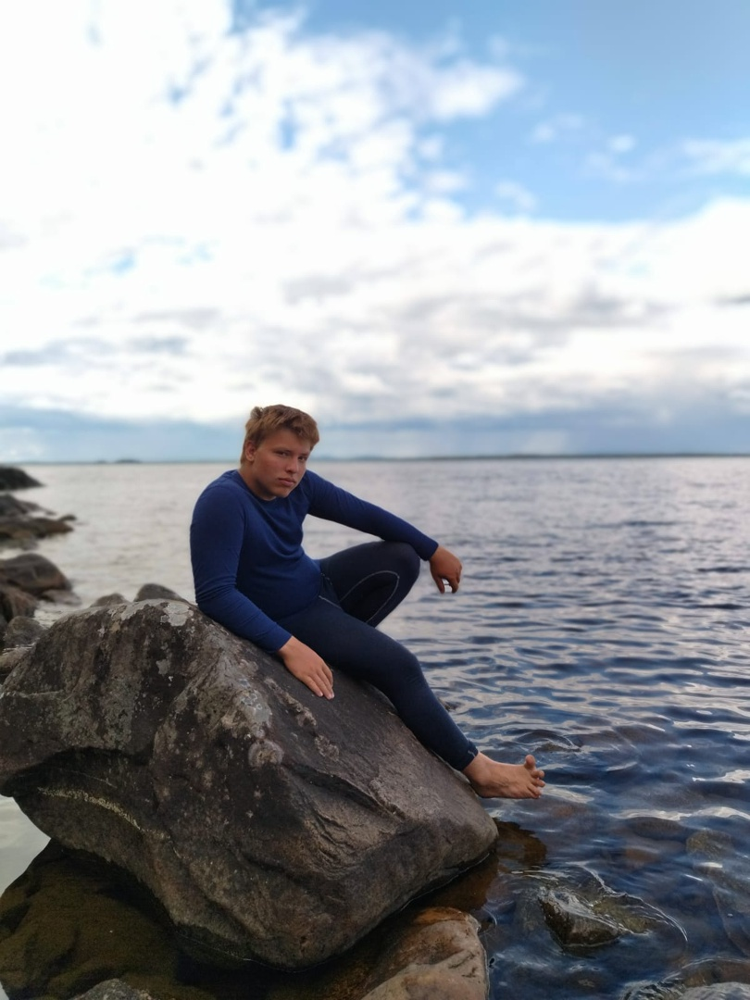
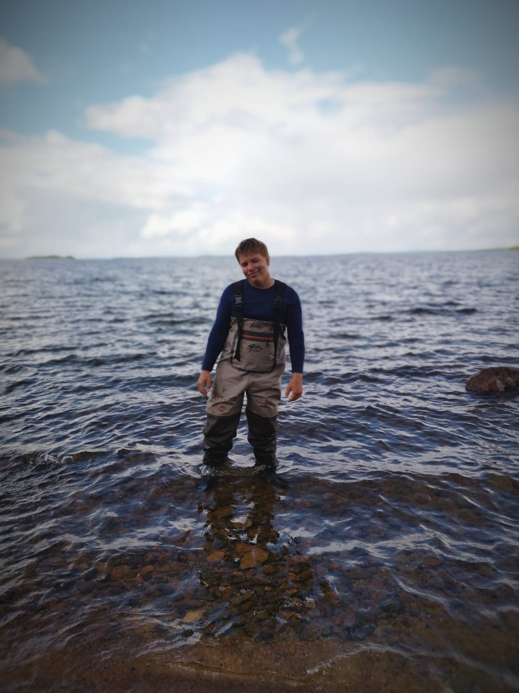
Вот немного фотографий за последний поход.
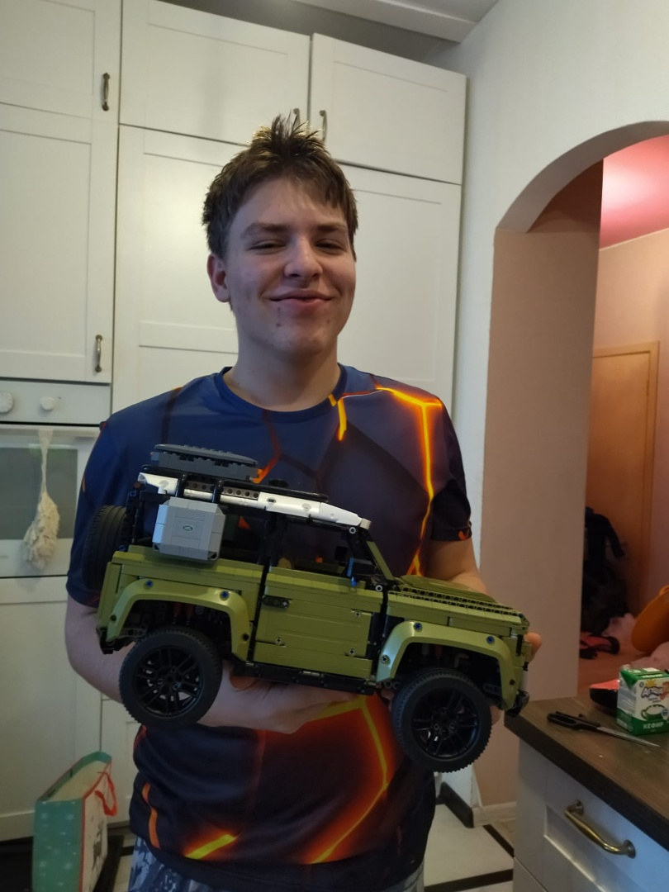
Я очень люблю что либо делать руками, мастерить, делать ремонт,
копаться в механизмах, в условиях городской квартиры, я отдыхаю от
школы и программирования в мире Лего Техник. На мой взгляд, это
одна из наиболее удачных систем для конструирования. Я обожаю
эксперементировать и собирать собственные, уникальные модели.
Что вообще такое этот ваш Лего Техник? Это шикарная серия
Лего, которая содержит в себе не просто кубики лего, а большое
количество шестерёнок, полноценную пневматику, моторы,
дистанционное управление. Всё это позволяет создать огромные,
многофункциональные проекты. В частности, мне нравится
моторизировать сложные механизмы, создавать многоступенчатые
раздаточные коропки, для работы нескольких функций модели от
одного двигателя.